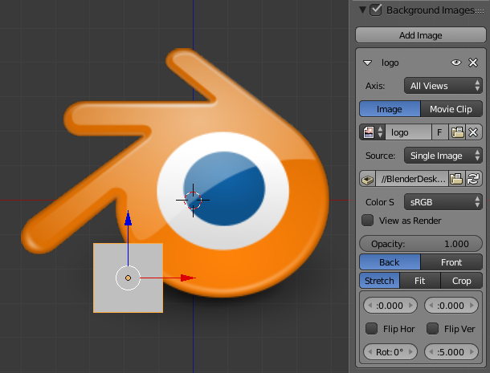

背景图–NGENNGT 翻译¶
参考
编辑器：3D视图
面板：背景图
A background picture in your 3D View is very helpful in many situations: modeling is obviously one, but it is also useful when painting (e.g. you can have reference pictures of faces when painting textures directly on your model...), or animation (when using a video as background), etc.
注解
背景图只能在正交视图显示。
设置¶

- 轴向
选择显示背景图的轴向。
- 源
背景图的数据源
- 图像
使用外部图像，图像序列，视频文件或者程序纹理。
- 影片剪辑
- Use one of the Movie Clip data-blocks.
- 不透明度
控制背景图的透明度
- 前/后
选择背景图位于所有物体前面或者后面。
- 拉伸/适配/裁切
控制图像在相机视图里的放置方式。
- 拉伸
使图像强行匹配摄像机框（可能改变宽高比）。
- 适配
在不改变图像宽高比的情况下，缩放图像以匹配相机视图。
- 裁切
缩放图像填充整个相机视图，但不改变图像宽高比（部分图像会被裁切）。
- X/Y
设置背景图X/Y轴向偏移量。
In orthographic views, this is measured in the normal scene units. In the camera view, this is measured relative to the camera bounds (0.1 will offset it by 10% of the view width/height)
- 水平翻转
翻转图像，将左侧翻转为右侧，右侧翻转为左侧。
- 垂直翻转
翻转图像，将上侧翻转为下侧，下侧翻转为上侧。
- 旋转
以图像中心旋转图像。
- 尺寸缩放
以图像中心缩放图像。